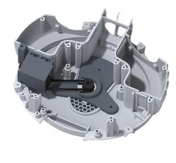

← Selected work
Mechanical prototyping / 2025
A wider world for Furhat
Concept development and mechanical prototypes for an additional degree of freedom.
- Context
- Furhat Robotics · Collaborative prototyping
- Period
- June – July 2025
- My work
- Concept exploration · Core mechanical design · Rapid prototyping
The idea
A social robot’s attention is shaped by where it can turn. This project explored an additional degree of freedom for Furhat through a 360-degree mechanism, extending the possibilities for orienting toward the people around it.
My contribution
- Explored mechanical concepts with the team and developed core elements of the design.
- Used Fusion 360 to model components and prepare physical prototypes.
- Produced and evaluated parts using FDM and resin 3D printing.
- Helped combine two prototype variants developed by different teams into one design.
Bringing prototype approaches together
The project brought separate mechanical approaches into a shared design. It strengthened my experience in iterative prototyping and in resolving design choices across collaborating teams.

